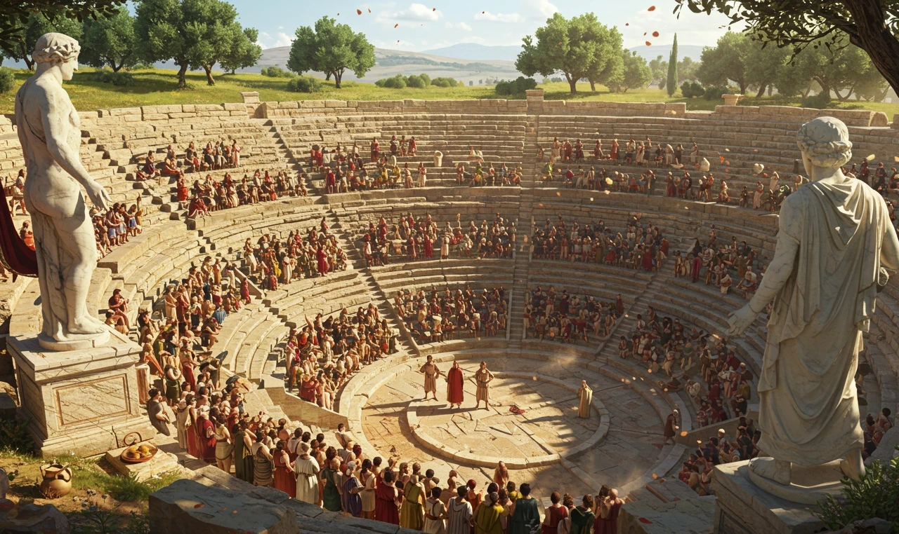
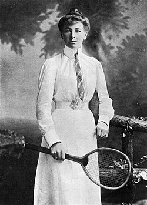
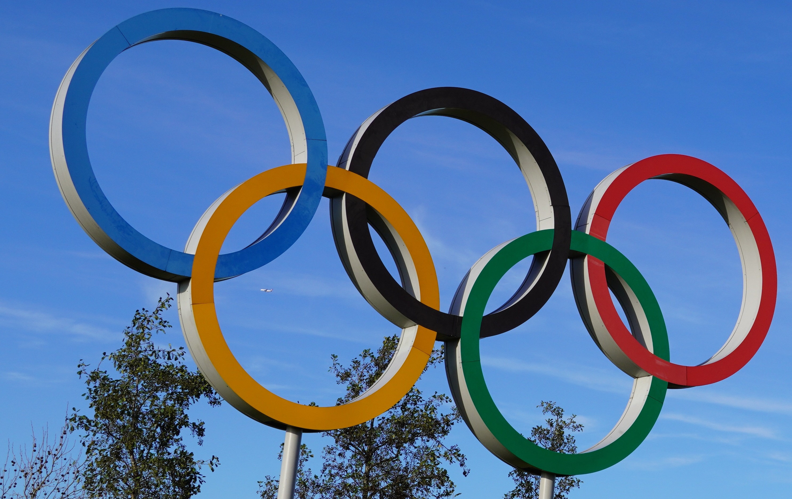
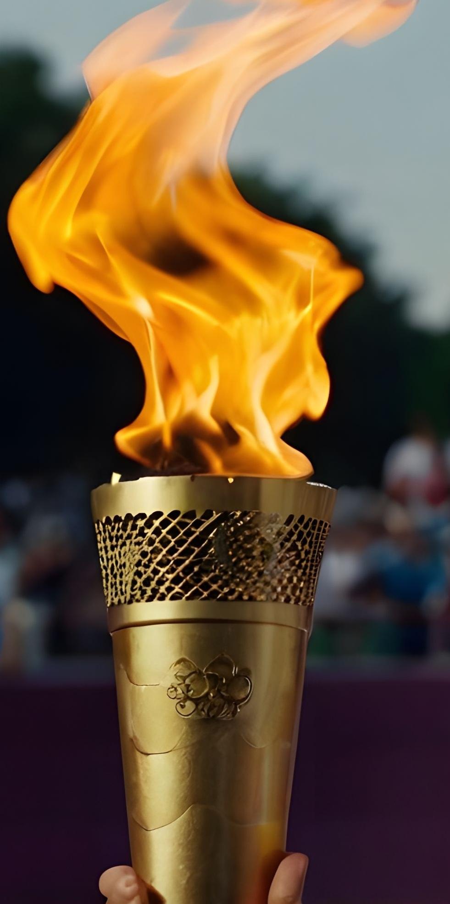
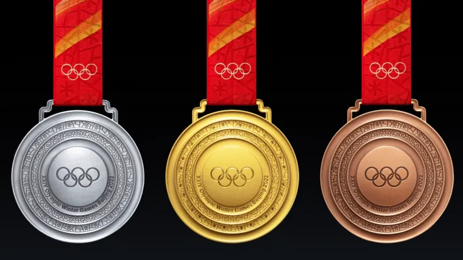
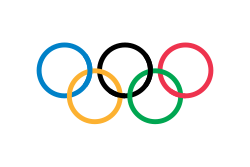
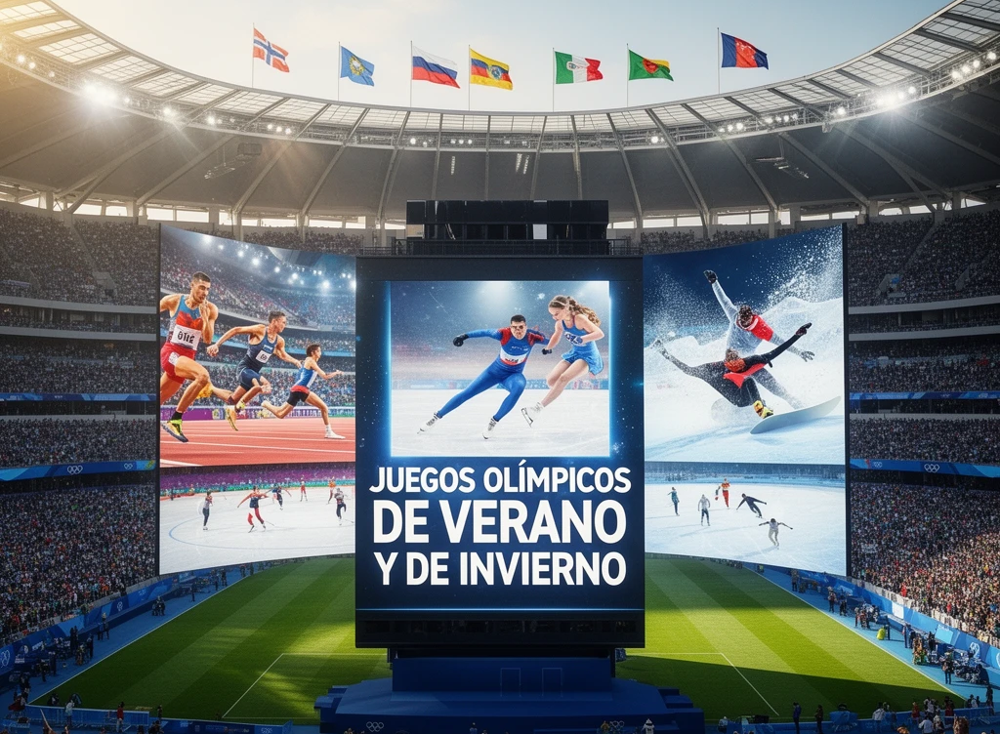

HISTORIA DE LOS JUEGOS OLÍMPICOS
Los Juegos Olímpicos son unas de las competiciones deportivas más importantes del mundo. En ellos participan deportistas de muchos países que compiten en diferentes deportes como atletismo, natación, gimnasia o fútbol. Se celebran cada cuatro años y son un momento muy especial en el que personas de todo el mundo se unen a través del deporte.
Los Juegos Olímpicos comenzaron hace más de 2.000 años en la antigua Grecias, en una ciudad llamada Olimpia. En aquella época, los deportistas competían para honrar a los dioses y demostrar su fuerza y habilidad. Solo participaban hombres y se realizaban pruebas como carreras, lucha o lanzamiento.
Muchos años después, en 1896, se recuperaron los Juegos Olímpicos gracias a un hombre llamado Pierre de Coubertin. Desde entonces, los Juegos Olímpicos modernos se celebran cada cuatro años en diferentes ciudades del mundo.

PARTICIPACIÓN DE LAS MUJERES
En los primeros Juegos Olímpicos modernos (1896), las mujeres no podían participar. Sin embargo, poco a poco esto fue cambiando.
En el año 1900, en los Juegos Olímpicos de París participaron por primera vez mujeres. Una de las primeras fue Charlotte Cooper, una tenista británica que ganó una medalla de oro y se convirtió en la primera mujer campeona olímpica.

Desde entonces, la participación de las mujeres ha ido creciendo hasta que hoy en día participan en todos los deportes y en igualdad con los hombres.
SÍMBOLOS OLÍMPICOS
Los Juegos Olímpicos tienen varios símbolos importantes:
Aros olímpicos

Son cinco anillos de colores que representan la unión de los cinco continentes: Europa (verde), Asia (amarillo), África (negro), América (rojo) y Oceanía (azul).
Antorcha olímpica.

Es una llamada que simboliza la paz, la amistad y la unión entre los pueblos. Se enciende en Grecia y viaja hasta la ciudad donde se celebran los Juegos.
Medallas olímpicas

Bandera olímpica:

Es blanca con los cinco aros en el centro y representa el espíritu de los Juegos.
VALORES OLÍMPICOS
Los Juegos Olímpicos no solo tratan de ganar, sino de aprender y mejorar como personas. Los valores más importantes que envuelven a este acontecimiento son:
Esfuerzo
Dar lo mejor de uno mismo, aunque sea difícil.
Respeto
Aceptar las normas, respetar a los compañeros/as y rivales.
Superación
Intentar mejorar cada día y no rendirse.
Trabajo en equipo
Ayudarse y colaborar para conseguir un objetivo común.
JUEGOS OLÍMPICOS DE VERANO VS INVIERNO
Existen dos tipos de Juegos Olímpicos:
JUEGOS OLÍMPICOS DE VERANO
Son los más conocidos y se celebran cada cuatro años. En ellos participan muchos deportes diferentes como:
- Atletismo
- Natación
- Gimnasia
- Baloncesto
- Tenis
- Ciclismo
JUEGOS OLÍMPICOS DE INVIERNO
También se realizan cada cuatro años, pero en años diferentes a los de verano. En estos Juegos se practican deportes que se realizan en la nieve o el hielo, como:
- Esquí
- Snowboard
- Patinaje sobre hielo
- Hockey
- Curling
- Descenso en trineo
Este año se han celebrado los Juegos Olímpicos de Invierno 2026 en Milán (Italia), donde deportistas de todo el mundo han competido en deportes de nieve y hielo.
Aunque son diferentes, ambos Juegos comparten lo más importante:
- Mismos valores.
- Participación de muchos países.
- El objetivo de unir a las personas a través del deporte.
